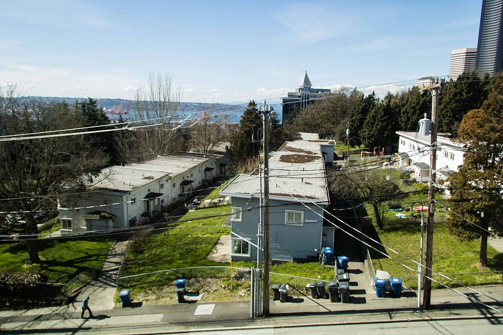

Living in Yesler Terrace

Yesler Terrace is a 22-acre (9 ha) mixed-income, mixed-use neighborhood in Seattle, Washington, United States. It was originally completed in 1941 as the state's first public housing development and the first racially integrated public housing development in the United States. It occupies much of the area formerly known as Yesler Hill, Yesler's Hill, or Profanity Hill. The development is administered by the Seattle Housing Authority, who have been redeveloping the neighborhood into a mixed-income area with multi-story buildings and community amenities since 2013. (From Wikipedia, CC BY-SA 4.0)
Yesler Terrace is a neighborhood in Downtown, Seattle with about 5,332 residents. The typical home value is about $562K (-3.1% over the past year), and 9 homes sold in the last 12 months. It is somewhat walkable, with higher crime than most neighborhoods in the area.
Home prices and the market
Home prices and the market
| Typical home value | $562K · -3.1% over 12 months |
|---|---|
| Homes sold, last 12 months | 9 · median sale price $275K · 9 were condos |
| Homes for sale (estimate) | 4 · homes typically go under contract in 24 days |
| Median household income | $64K · 153rd highest income of 155 |
Schools
Schools
| Elementary | Bailey Gatzert Elementary School, 0.3 mi · 31% meet standard Area average 45% · 136th best elementary schools of 155 |
|---|---|
| Middle school | Washington Middle School, 0.9 mi · 48% meet standard Area average 45% · 129th best middle schools of 155 |
| High school | Summit Public School: Sierra, 0.4 mi · 38% meet standard Area average 54% · 138th best high schools of 155 |
| Nearest college | Seattle University, 0.5 mi |
Share of students meeting the Washington state standard in English and math (2024-25). The nearest school is not always the assigned school; check with the school district.
Safety
Safety
About 190 crimes per 1,000 residents a year (violent crimes counted three times), higher crime than most neighborhoods in the area: 148th lowest crime of 155. Based on mapped police incidents in this neighborhood, scaled to the city's FBI-reported rate. Busy commercial areas can look high because visitors are not counted as residents.
Getting around
Getting around
| Walkability | 15.7 of 20 (somewhat walkable) · 55th most walkable of 155 |
|---|---|
| Light rail or train | Broadway & Terrace St, 0.1 mi · 2nd closest to rail of 155 |
| Nearest bus stop | 9th Ave & Alder St, 0.06 mi |
| How residents commute | 18% take transit · 28% work from home |
Everyday amenities
Everyday amenities
| Grocery store | Dong Hing Market, 0.3 mi · 11 within a mile |
|---|---|
| Pharmacy | Chesterfield Services, 0.3 mi |
| Restaurants | 312 within a mile · 5th most restaurants nearby of 155 |
| Shopping | Pioneer Square, 0.6 mi |
| Hospital | Harborview Medical Center, 0.1 mi · 35 clinics within 2 miles |
| Library | International District / Chinatown Library, 0.5 mi |
Parks and recreation
Parks and recreation
| Nearest park | Yesler Terrace Pocket Park, 0.1 mi · 90 acres of parks within a mile |
|---|---|
| Large green space | Lake Washington Boulevard, 1.5 mi |
| Walking trail | Freeway Park Trails, 0.6 mi |
| Gyms, spas and studios | 39 within a mile |
| Golf | Jefferson Park Golf Course, 2.3 mi |
Thinking about Yesler Terrace?
Rachel Yo, Realogics Sotheby's International Realty, can walk you through homes for sale, recent sales and what to know before you buy here.
Your details go only to Rachel Yo at Realogics Sotheby's International Realty to answer your request. They are not sold or shared, and your mobile number and texting permission are never shared with anyone for marketing.
Nearby neighborhoods
- International DistrictSeattle · $450K
- First HillSeattle · $540K
- Pioneer SquareSeattle · $589K
- MinorSeattle · $785K
- Central Business DistrictSeattle · $591K
- Pike-MarketSeattle · $674K
Data as of: home values Zillow 2026-09; recorded sales Nov 2025 – Oct 2026; schools OSPI 2024-25; Census ACS 2020-2024. Distances are straight-line from the center of the neighborhood.